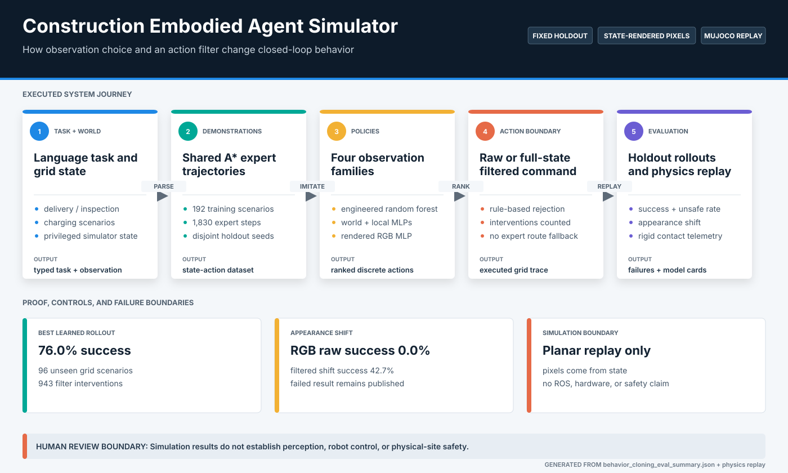
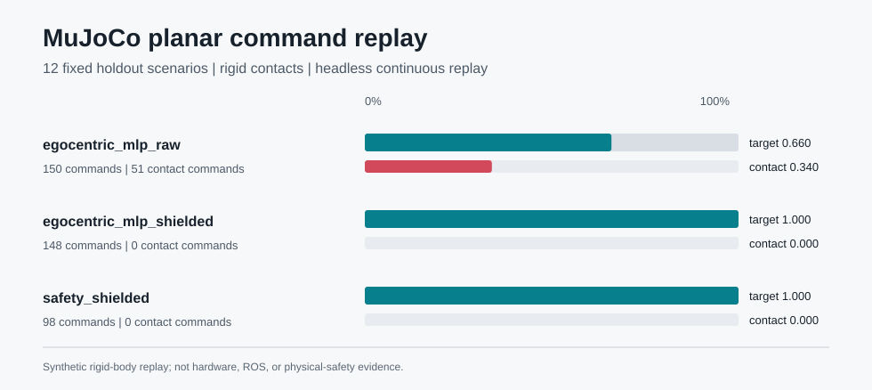

A policy can appear competent on familiar grids while failing under visual shift or issuing actions that violate known construction-zone rules.
Primary case study / Embodied AI
Construction Embodied Agent Simulator
Language-conditioned action under spatial and appearance shift.
Shared expert demonstrations support a controlled comparison between engineered state, egocentric state, semantic rasters, and rendered RGB. Raw and filtered rollouts expose where learned action prediction is brittle.
Generated concept image / not simulator or hardware evidence
Procedural grids, A* demonstrations, four observation families, closed-loop rollouts, action filtering, and planar MuJoCo replay.
96 disjoint holdout scenarios plus a 12-scenario physics subset, with raw failures and intervention counts preserved.
Structured 2D simulation with state-rendered pixels. No physical camera, ROS stack, mobile robot, or safety validation.
System
One demonstration set, multiple observation contracts
The comparison holds task generation, expert actions, and holdout layouts constant. Observation encodings and policy models change; the rule-aware filter remains a separate control layer.

Measured behavior
The filter prevents contacts but does not repair perception
Filtered success improves the command path on the authored rules, while the unseen-palette test shows that rendered-pixel behavior is not robust to appearance change.


Engineering decisions
Failure is separated by layer
Policy quality, appearance sensitivity, rule filtering, and command replay are measured independently so one layer cannot hide another.
Disjoint procedural holdout
Training and evaluation use separate generated layouts, reducing direct map memorization while keeping task difficulty inspectable.
Shared demonstrations
Every learned observation family is fitted from the same expert trajectories, making comparison more meaningful than unrelated policy runs.
Appearance stress test
An unseen palette changes rendered pixels without changing the underlying grid. Raw success collapsing to zero exposes visual brittleness directly.
Independent action control
The rule-aware filter has access to full simulator rules and logs every intervention. It is a privileged safety scaffold, not learned robustness.
Retained failure
Rendered-pixel behavior does not survive a simple appearance change.
Action accuracy falls from 0.813 to 0.417 and raw success falls from 0.635 to 0.000 under the unseen palette. The result argues for stronger visual representations and domain randomization, not a deployment claim.
Inspect failure analysisRun locally
Regenerate the holdout evidence
The evaluator trains compact local models, runs closed-loop holdouts, records interventions, and writes the checked-in comparison artifacts.
python projects/vla-embodied-agent-simulator/evaluate_vla.py
python -m pytest tests/test_vla_embodied_agent.py
streamlit run projects/vla-embodied-agent-simulator/app.py